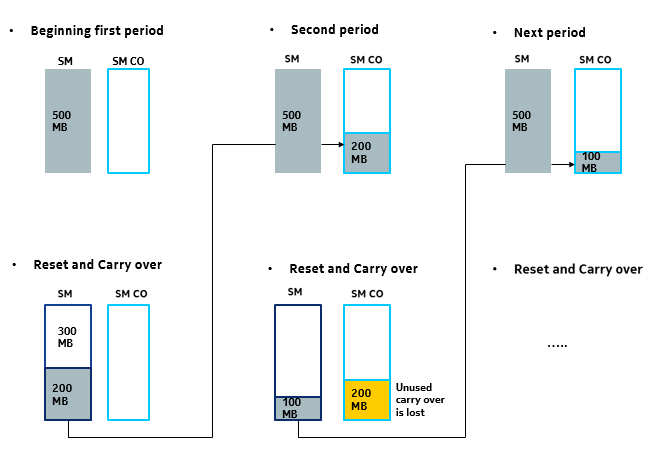
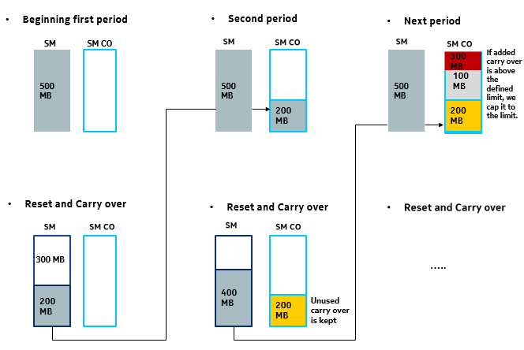

Consider the following examples for better understanding of this
functionality:
Example 1: Carry-over balance is made available only for one billing
cycle
Bob has a device associated with a bucket balance of 500 MB monthly recurring
subscription. After consumption for a month, it is found that only 300 MB is
used and remaining 200 MB is available to be carried over to the next billing
cycle to be used along with the renewed bucket balance of 500 MB. If at the end
of the next billing cycle, only 100 MB is used from the bucket balance, then
only the remaining 400 MB bucket balance is carried over to the next billing
cycle and the previous carried over 200 MB bucket balance is discarded.
Figure: Carry-over bundle is made available only for one billing cycle

-
SM refers to Shared Monthly, which means only
a bundle with a charging service containing a bucket.
-
SM CO refers to Shared Monthly Carry-Over
bucket.
-
Period refers to the billing cycle.
Example 2: Defining the cap limit of carry-over balance
Bob has a device associated with a bucket balance of 500 MB monthly recurring
subscription. The cap limit applied to the carried over bucket balance is 300
MB. After consumption for a month, only 300 MB is used and the remaining 200 MB
is available to be carried over to the next billing cycle. If at the end of the
next billing cycle, only 100 MB is used from the bucket balance, then only the
remaining 400 MB bucket balance is added to the existing carried over bucket
balance. Since, after adding the new carried over balance to the existing
carried over balance, the cap applied to the carried over bucket balance (300
MB) exceeds, the carried over bucket balance is limited only to 300 MB or the
cap limit.

-
SM refers to Shared Monthly, which means only a
bundle with a charging service containing a bucket.
-
SM CO refers to Shared Monthly Carry Over
bucket.
-
Period refers to the billing cycle.
Example 3: Threshold notification is triggered when the total of remaining
bucket balance and carry-over balance exceeds the defined limit
Bob has a device associated with a recurring bundle of 1 GB configured with a 20
percent threshold notification. At the end of the first billing cycle, only 500
MB of the bucket balance is consumed and the remaining 500 MB is available to be
carried over to the next billing cycle. The carried over balance is added to the
renewed bucket balance of 1 GB and the total bundle balance is 1.5 GB. The
notification is triggered when the total of the remaining bucket balance and
carried over bucket balance exceeds 20 percent of 1 GB, which is 200 MB.
Example 4: Total of remaining bucket balance and carry-over balance triggers
a low-level threshold notification
Bob has a device associated with a recurring bundle of 1 GB configured with a
low-level threshold notification of 20 percent. At the end of the first billing
cycle, only 100 MB of the bucket balance is consumed and the remaining 900 MB is
available to be carried over to the next billing cycle. The carried over balance
is added to the renewed bucket balance of 1 GB and the total bundle balance is
1.9 GB. The notification is triggered when the total of remaining bucket balance
and carried over bucket balance exceeds 20 percent of 1.9 GB, which is 380
MB.
 Notice:
Notice: